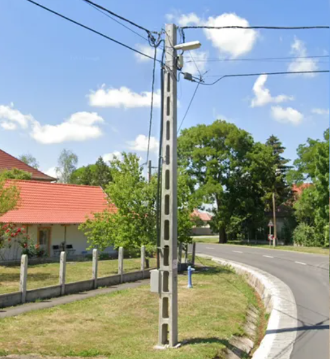
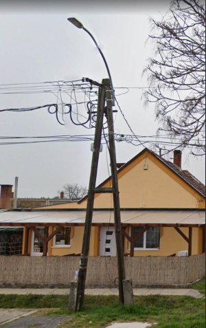
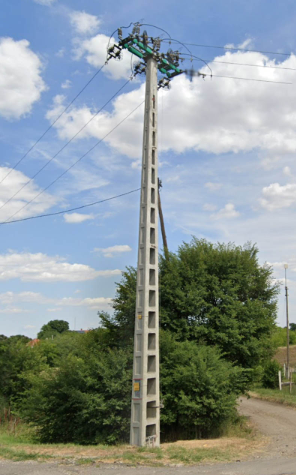
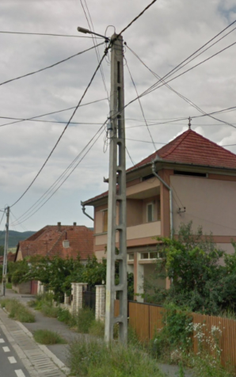
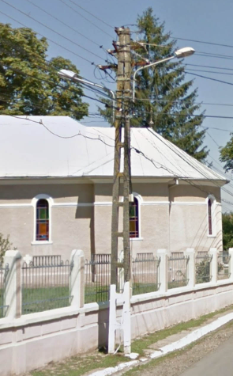
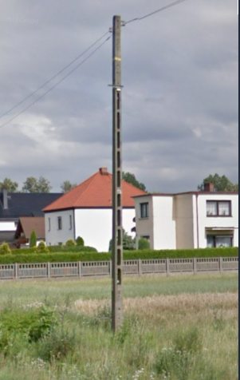
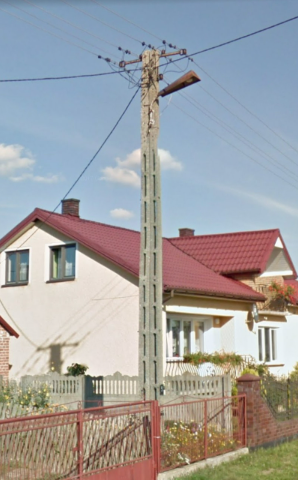
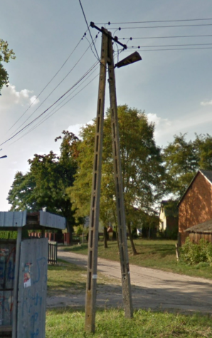

Honey-Poles - Hungria
A Hungria é um dos países mais conhecidos pelos honey-poles no GeoGuessr, principalmente por seus postes de concreto com furos verticais e o característico “pote” no topo, muito comuns em áreas rurais e estradas agrícolas planas.



- Muito comuns em estradas rurais planas e campos agrícolas.
- A fiação geralmente parece mais organizada que nos Bálcãs.
- Normalmente são postes de concreto cinza com vários furos alinhados verticalmente.
Honey Poles - Romênia
Os honey-poles da Romênia costumam parecer mais antigos e desorganizados que os da Hungria, frequentemente aparecendo em áreas rurais com muita fiação aérea e infraestrutura mista entre concreto e madeira.


- Parecidos com os húngaros, mas normalmente mais altos e mais “bagunçados”.
- Muitas vezes possuem mais fios cruzando.
- É comum encontrar mistura de postes de concreto e madeira.
- A infraestrutura tende a parecer mais antiga.
Honey Poles - Polonia
Na Polônia, postes semelhantes podem aparecer em regiões rurais, porém normalmente possuem uma aparência mais moderna e organizada, com estradas e infraestrutura mais padronizadas em comparação aos países dos Bálcãs.



- Os postes poloneses costumam ser de concreto e possuem aparência mais moderna e organizada.
- Diferente dos postes da Hungria, os furos normalmente não começam no chão, mas sim alguns centímetros acima da base do poste.
- A infraestrutura ao redor geralmente parece mais padronizada, com estradas melhores e cidades mais organizadas.
Outros Paises
Além da Hungria, Romênia e Polônia, outros países da Europa Central e dos Bálcãs também possuem postes semelhantes aos honey-poles, embora normalmente sejam menos consistentes ou menos característicos no GeoGuessr.
Sérvia: Possui muitos postes de concreto antigos em áreas rurais, frequentemente acompanhados de fiação desorganizada e infraestrutura mais desgastada.
Croácia: Alguns postes semelhantes aparecem principalmente no interior do país, longe das regiões costeiras mais modernas.
Eslováquia: Tem postes parecidos com os da Hungria, porém normalmente em regiões mais montanhosas e com estradas mais organizadas.
Bulgária: É comum encontrar postes antigos de concreto e muita fiação aérea, principalmente em vilarejos e regiões rurais.